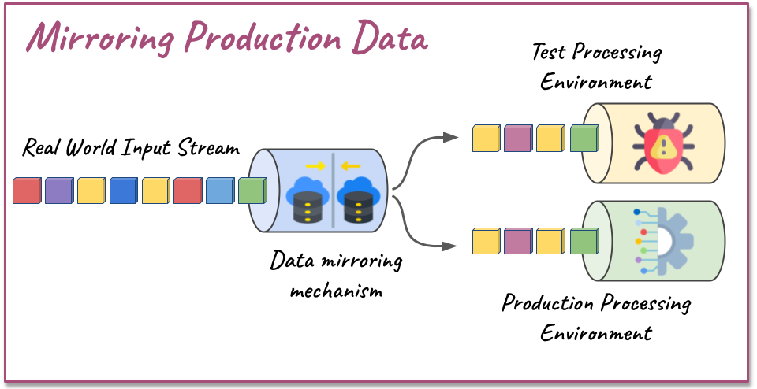

#G1
COLLECT INFORMATION
Start your testing process by gathering pertinent information for tests. Comprehend the project’s business context, determine test preparation parameters, anticipate adverse conditions and fault tolerance scenarios, and generate detailed technical documentation.
- Understand the application context: In the planning phase, get a solid understanding of your project’s business context. Identify relevant characteristics that can guide your testing decisions. This could include determining the desired testing objectives and quality characteristics.
- Gather parameters needed for test preparation: Collect information needed for test preparation, such as expected inputs and outputs, response time, and expected and maximum data throughput rates.
- Identify potential issues: Understand adverse conditions and fault tolerance scenarios. These could include service interruptions, fluctuations in hardware resources, network fluctuations, variations in demand, and potential failures. Identify probable factors that hinder testing such as timing issues and non-determinism.
- Document your process: Testing-relevant information should be documented and accessible to testers. Produce technical documentation that anticipates information needed for testing activities, such as UML activity, sequence, and state machine diagrams, which express the inherent characteristics of DSP. Such documentation might include details about concurrency and operation states, supporting testers in understanding complex, software-intensive systems.
#G2
ESTABLISH TEST OBJECTIVES

Define clear testing objectives to guide your testing strategy and resource allocation. Each application’s unique features dictate specific quality requirements. It’s crucial to align these characteristics with desired quality standards, emphasising the importance of understanding quality from the business perspective.
- Evaluate software quality requirements concerning the application’s characteristics. Discuss with stakeholders the Guiding questions to establish test objectives to prioritise testing objectives according to quality categories: functional suitability, performance efficiency, reliability and maintainability
- Comprehend quality from the perspective of the business involved in the application. Ask about the ideal behavior expected from the application in the context. Map the types of failures and categorize them according to the degree of impact on the business.
- Engage in process stakeholders—business analysts, developers, testers, clients, and users. Discussing these issues with client-side business analysts will help assess potential business impacts due to varying levels of quality across different categories of the software quality model.
FUNCTIONAL SUITABILITY
Q-A How critical is the correctness of the results delivered by the application?- Metrics: Define and establish metrics for assessing the correctness of the application's output.
- Prioritisation: Rank the application's features based on the importance and criticality of their correctness. This ranking will guide test planning and ensure that the most crucial features receive proper attention.
- System-level Testing: Pay special attention to system-level tests that involve all integrated modules, dependencies, and services. In DSP applications, various system-level factors, such as concurrency, asynchrony, latency, glitches, node crashes, out-of-order, lost, and duplicate messages, can impact the correctness of results.
- Metrics: Establish metrics and acceptable thresholds for the accuracy of results. In some DSP application contexts, data may be subject to fluctuations (e.g., sensor data or geo-location) and some degree of variation in result accuracy may be acceptable in others not.
- Non-Determinism: Acknowledge that non-determinism in DSP can affect results accuracy. #G7-B brings recommendations to face this issue, such as establishing acceptable thresholds for result variations in the test oracle, conducting multiple test executions observed for functionalities impacted by variations in results, applying statistical analysis techniques to determine if the variations of the results are acceptable, and others.
- Monitoring: Use application monitoring tools, such as Grafana, to gather result accuracy metrics and facilitate the analysis of the application's performance.
PERFORMANCE EFFICIENCY
Q-C How critical are the time requirements (e.g., delay, response time)?- Parameters: Identify the relevant time parameters for the application context and specify thresholds for these parameters based o business requirements.
- Clock Control: Manage the application's clock in test environments, as specialised time handling is required for testing purposes.
- Simulate real-world: Time factors are vulnerable in real-world conditions, such as network latency, hardware overhead, and communication overhead with third-party services. Thus, the test environment should closely simulate the production environment conditions.
- DSP Frameworks: Typically, DSP frameworks provide control functions and interfaces in their test utilities to address time-related issues, such as clock simulation and manipulation of processing time and watermarks. Consider these aspects when selecting DSP frameworks.
- Detailed Recommendations: Check details recommendations regarding time issues in #G7.
- Resource Estimation: Estimate the available resources for running the application in production (e.g., memory, CPU, server instances, and pay-per-use services).
- Network Considerations: Consider the network resources and characteristics required to run the application, such as latency, throughput, and bandwidth.
- Testing: Conduct system and infrastructure-level testing using resources allocated for the production environment. Employ monitoring tools to evaluate whether the application operates as expected with the estimated resources.
- Monitoring: Utilise hardware resource monitoring tools such as Zabbix, Paessler PRTG (network-focused), Nagios, New Relic (cloud-based monitoring), and Intel Platform Analysis Technology (dedicated hardware monitoring).
- Scaling Strategy: For efficient resource utilisation, strategise dynamic hardware scaling, which is essential in DSP infrastructures that frequently rely on elastic cloud services with variable, demand-proportionate costs.
- Testing Scenarios: Establish diverse scenarios involving hardware resource usage (i.e., low, medium, and high demand). Conduct tests to optimise settings for each scenario.
- Code Optimisation: Efficient resource usage may also involve optimising application code. Perform tests at all levels to identify resource-intensive operations and optimise them.
- Profiling: Use built-in DSP platform features to monitor metrics, track consumer lag, and log requests.
- Parameters: Define parameters and characterise the application's operation at maximum capacity. Determine the frequency and duration of maximum capacity exposure.
- Stress Test Scenarios: Create maximum stress scenarios and execute stress tests.
- Monitoring: Use tools to monitor application performance and hardware resource usage during testing.
RELIABILITY
Q-G How significant is the application's reliability during regular operation?- Reliability Parameters: Establish parameters to measure application reliability during regular operation.
- Defining Standards: Specify what constitutes acceptable and unacceptable situations or issues during regular operation.
- System-Level Testing: Conduct system-level testing that simulates regular operating conditions to verify compliance with reliability parameters.
- Availability Metrics: Determine the required application availability rates. Specify the acceptable frequency and maximum duration of interruptions.
- Fault Tolerance Tests: Perform fault tolerance tests in order to verify the application's availability under various scenarios.
- Mitigation Strategies: Identify the causes of application unavailability to propose effective mitigation strategies. For instance, failures in third-party services can result in application unavailability, so preparing a backup service is recommended.
- Adverse Conditions Definition: Detail adverse conditions and clarify whether the application can function with limited capabilities under such scenarios, specifying which functionalities would continue or stop.
- Performance degradation approach: Specify if the application's performance might deteriorate under adverse conditions and delineate the potential extent of this degradation.
- Fault Tolerance Testing: Conduct fault tolerance testing to identify scenarios of adverse conditions where the application can still perform as required.
- Chaos Engineering: Employ Chaos Engineering in testing to assess application robustness, using an experimental setup to simulate failures like network degradation, node crashes, third-party service outages, and reduced computational resources.
- Interruption Scenarios: Characterise potential service interruption scenarios. Specify the recovery time from outages and whether data from the outage period can be discarded or requires further processing.
- Recovery Plan: Establish a disaster recovery plan and processes to promptly reestablish application services.
- Fault Tolerance Testing: Perform fault-tolerance tests to verify autonomous recovery mechanisms and application and data integrity following recovery.
MAINTAINABILITY
Q-K What is the priority for evolving the application without introducing defects or degrading quality?- Evolution Plans: Establish application evolution plans. This includes outlining future functionalities, changes in performance needs, and data volume growth.
- Regression Testing: Before deploying new releases, perform regression testing for result correctness and potential performance degradation. This process requires automation, skilled personnel, time, and funding.
- Contracts Integrity Tests: Conduct thorough tests to confirm the integrity of message contracts, as schema changes frequently trigger regression failures.
- Test Automation: Automating tests can significantly reduce the workload on developers/testers while ensuring consistency and extensive coverage in testing, hence minimising maintenance efforts.
- CI/CD Pipeline: Implementing a continuous integration and delivery pipeline to catch bugs and errors early in the development process, minimising maintenance efforts.
- Test Case Maintenance: Consider maintaining automatic test cases, as constant changes in application scenarios require regular refactoring. Focus on automating tests for stable components and avoid creating excessive test cases during project maturation to prevent unnecessary effort wastage.
#G3
MANAGE TESTING TEAM ACCORDING TO TESTING STRATEGY

The optimized management and employment of human resources is a way to improve the testing process, especially in the context of DSP, where technical skills and theoretical knowledge are vital. Ensure your team’s work process is well-managed and they possess the required knowledge to carry out planned testing activities effectively.
- Skill Sets: Ensure that the testing activities align with the skills of the testing team. Typical skills for testers in the DSP context may include fundamental DSP understanding, distributed systems knowledge, real-time analytics, data modelling, performance, fault tolerance and resiliency testing, and debugging. Additionally, it’s crucial to have team members skilled in developing and automating testing infrastructures, particularly within Continuous Integration/Continuous Deployment (CI/CD) environments.
- Domain Knowledge: Ensure the team understands the nuances of the DSP architecture they’re testing and the specific industry context where the DSP application will be deployed (finance, telecommunications, marketing, social media feeds, multiplayer games etc).
- Training: If necessary, consider providing training and development opportunities to enhance the test team’s skills. Promote a culture of continuous learning within the team to stay updated with evolving DSP technologies and methodologies to anticipate needed skill sets. Motivate participation in DSP workshops, seminars, or conferences for hands-on learning and networking.
- Workload: Prioritize workload allocation based on the criticality of the testing activities. To ensure balanced task distribution, consider the available workload when determining the number and type of test tasks that can be assigned.
#G4
PLAN TIME ALLOCATION
Testing can be significantly hampered by time pressure, causing teams to rush or overlook vital activities. Especially in the DSP context, creating complex tests can be time-consuming, and executing certain tests, like performance tests, may also take a significant amount of time. It’s essential to plan and optimise time resources meticulously. This guideline offers insights on preventing delays, alleviating time-induced pressure, and sidestepping potential contractual issues.
- Allocate time in the project schedule for critical activities, including the development of test cases, configuration of environments, creation of test datasets, execution of tests, and analysis of results.
- Consider the complexity of the activity, the time required for test execution, and the number of test cases involved when estimating the time required for each testing activity.
- Prioritise activities based on test objectives and project characteristics, as detailed in Guideline #G2.
- Develop the testing schedule by considering the priority and estimated time required for each testing activity, the available time in the schedule, and the feasible workload.
- Employ automated test case generation techniques, such as property-based tests, to get many basic test cases quickly.
- Gradually initiate the automation of the testing infrastructure as the application gains stability, prioritising the most time-consuming activities.
#G5
PLAN FINANCIAL RESOURCE ALLOCATION

Financial resources are vital for testing DSP applications. Resources are required for numerous activities, including hardware hiring, service outsourcing, training, consultancy, software acquisition, and test infrastructure maintenance. Therefore, it is a precaution to anticipate allocating financial resources to guarantee resources for top-priority testing tasks.
- Test Objectives Alignment: Ensure that the allocation of financial resources aligns with the testing objectives outlined in #G2, and then prioritise investments that drive the most significant impact on achieving these objectives.
- Comprehensive Costing: Account for all potential costs related to the testing process, includ- ing infrastructure (hardware, cloud services), personnel (in-house tester salaries, training fees), consultancy contracts, contracting of services and tools (e.g., test frameworks and third-party services used in tests), and the ongoing maintenance and evolution of the testing infrastructure.
- Cost-Reduction Strategies: Implement strategies to minimise costs, consider strategies such as infrastructure automation, optimising the use of on-demand paid hardware resources, employing open-source tools, and utilising mock infrastructure and services. Evaluate the cost-effectiveness of cost-reduction strategies against test efficacy.
#G6
DEVELOP A TEST DATA STRATEGY
Test data should effectively identify application defects, confirm feature functionality as intended, and ensure compliance with non-functional requirements. This guideline highlights the primary sources of test data and provides insights and recommendations to assist in developing a test data set. It also includes a summary of data quality characteristics pertinent to DSP application testing.
- Consider ISO/IEC 25012 data quality attributes to assess your test data set: Accuracy, Credibility, Currentness, Compliance and Confidentiality. Check Data Quality Characteristics Board for detailed descriptions.
- Combine diverse test data sources and generation techniques to enhance data variety and mitigate potential biases associated with individual techniques.
- Do not over-rely on historical data, as its effectiveness might be limited due to many never manifested defects in production. Historical data's currentness may also be compromised, as it does not exercise new features and could become incompatible with future application versions.
- Improve historical data efficiency by utilizing semi-synthetic data generation strategies such as mutation, machine learning and manual customization. Check Semi-Synthetic Data Board for details.
- Maintain vigilance over the data schema, and utilize tools such as Avro for version management and compatibility, to minimize issues throughout the schema's evolution.
- Adhere to privacy regulations, such as GDPR, during test data handling to prevent legal issues. Utilize approaches like machine learning and shadow mode running to safeguard confidential information when mirroring production data, as outlined in Mirroring Production Data.
- The property-based data generation is a cost-effective approach, as it is fast and easy to apply, making it suitable when time and resources for generating test data are limited.
- High-quality documentation is a valuable asset when real data is unavailable. Natural language processing algorithms can be employed to extract information from documentation to supply automatic approaches with relevant parameters, generating more accurate synthetic data.
- Accuracy: Data accurately represents the intended attribute values of a concept or event within the application context. DSP applications' operations and filters can be highly sensitive; testing such functionalities relies on the precision and relevance of values corresponding to the variable's concept.
- Credibility: This concerns the data’s authenticity or whether it is believable as real-world data from the application's usage context. Addressing credibility in the DSP context is more complex due to additional factors, such as the temporal distribution of data, frequency of variable values, and intervals between messages. Furthermore, the 4Vs of Big Data (volume, velocity, variety, and veracity) introduce unique aspects to stream data.
- Currentness: This relates to the data's age validity. Data characteristics can change over time in the DSP context, making them ineffective for testing (similar to how concept drift affects ML algorithms). Furthermore, application updates may cause data to be incompatible with newer application versions.
- Compliance: This involves data adhering to standards and conventions. DPS applications can consist of numerous entities interacting through various message patterns. At this point, test data must be compatible with the data structures in use. Adaptations may be necessary, and message schema management tools provide functionalities to provide compatibility between different message standards.
- Confidentiality: This concerns preserving privacy and protecting sensitive information. DSP applications often operate in contexts involving confidential or sensitive data, such as personal, geo-location data, and financial data. Strategies to maintain the confidentiality of real data include anonymization, masking, using artificial intelligence techniques, and mirroring production data in shadow mode (details in Mirroring Production Data).
- Test Oracle Generation: Historical data may consist of inputs without expected outputs, and any existing outputs could be unreliable. Thus, generating and validating outputs for building a test oracle is necessary; this activity depends on documentation that includes data characterization and examples of correct outputs.
- Coverage Limitations: Despite extensive historical data, it may not cover all potential future bugs due to application complexity and unmanifested bugs that could arise in production.
- Outdatedness: Historical data might not exercise new functionality effectively and could become incompatible with updated message schemas. As conceptual data characteristics can change over time, their ability to simulate real-world conditions may decrease.
In this approach, replicas of the input data stream are redirected from the production environment to the testing environment, enabling the application to be tested with real data. This strategy allows the detection of critical failures that could disrupt the application's execution and facilitates the comparison of performance parameters and results accuracy across different application versions. Additionally, this strategy can be employed while ensuring privacy and data security through mechanisms such as shadow mode, which conducts automatic verification of parameters and execution results. Implementing this technique requires the availability of resources to replicate the infrastructure and skilled professionals to build the verification mechanism.
- Property-based Data Generation: generates data by exploiting the message contract properties of the data stream. The technique can generate immense amounts of data which can be refined by a process called shrinking, where the objective is to find the minimum data set to manifest the failure. this is a low-cost technique that requires effort to prepare and is, therefore, quick and easy to apply. The following tools support this technique FlinkCheck, ScalaCheck, StreamData, and Ecto Stream Factory. (Check detais on property-based tests.)
- Statistical Properties-Based Generation: results in more accurate data by configuring the generated data's statistical distribution and the temporal variations in the data distribution. This approach requires a solid understanding of mathematics and statistics. Custom scripts can be built using statistical libraries like Scipy in combination with fake data generation libraries. Pay-per-use services like Mockaroo offer ready-to-use solutions where users simply specify data generation properties.
- AI-Based Generation: Natural language processing algorithms can extract information from project documentation, providing valuable input for machine learning algorithms in generating more meaningful data.
- Mutation: This process generates new data by slightly altering the values of existing data.These minor modifications increase data diversity, reflecting the variability and complexity of real-world data while preserving the essential characteristics of the original data.
- Machine learning: This method employs machine learning algorithms to extract features from an existing dataset and create models for generating new data. It can be used to expand limited test datasets, produce data variants to enhance test coverage and preserve real data privacy. Implementing this technique relies on skilled professionals in the field of machine learning.
- Manual customizations: This process involves refining data to test functionalities that depend on a specific set of conditions, which synthetic data may not be able to trigger. Customizations can be achieved through iterative script execution processes and manual adjustment of generation variables until the desired result is achieved. This approach requires a professional who understands the application’s context and has access to comprehensive documentation detailing the functionalities.
#G7
BE AWARE OF PARTICULAR ISSUES IN DATA STREAM PROCESSING APPLICATION TESTING
DSP applications have specific characteristics that must be considered during test planning and execution. This guideline highlights three particular concerns: timing issues, the non-deterministic nature of distributed DSP, and fault tolerance requirements. Each concern is briefly introduced, followed by relevant observations and recommendations for associated testing strategies.
- Keep in mind time-related factors during testing, such as message ordering, timeouts, delays, and response time requirements. We recommend practices like controlling the system clock to simulate the production environment's timing characteristics, accelerating the clock to speed up testing, and adjusting the processing time interval to maintain a balance result precision and computational load. Test the system's ability to handle out-of-order data, a common occurrence in DSP applications. Utilize a checkpoint system to preserve consistent snapshots of all timer states. Consider tools like the Awaitility library to synchronize operations during testing. Below, we discuss time-related concerns and associated recommendations more comprehensively.
- Don't neglect the non-deterministic behaviour of DSP, which can cause the application to deliver varied results across multiple executions. Recommended approaches include the deterministic replay to identify and manage non-deterministic variables during testing and the creation of test oracles by setting acceptable thresholds for result variations. Cogitate adopting chaos engineering to check the system's robustness under non-deterministic conditions. Testers should also be aware of common non-deterministic bugs, such as race conditions, ordering issues, state inconsistencies, and problems related to lost, duplicate and delayed messages and timeouts. Next, we bring recommendations regarding issues of non-determinism in DSP context.
- Fault tolerance is a significant concern in DSP applications; in this sense, chaos engineering is the primary strategy for testing fault tolerance and system recoverability. Identifying appropriate fault tolerance mechanisms and testing whether they work suitably is also essential. Common fault tolerance mechanisms in the DSP context are infrastructure redundancy, scalability of hardware and network resources, service redundancy, operation downsizing, application version rollback, operations rollback, and message contract compatibility. Following we provide additional information and recommendations regarding fault tolerance.
- Clock Simulation: Clock Simulation: Controlling the system clock in the test environment is essential to emulate the time aspects of the production scenario as closely as possible. This feature is particularly useful for testing temporal windows, as the number of messages in each window can vary depending on the intervals between messages. The same applies to testing algorithms and functions that evaluate time factors, be aware of how the frequency of event generation in your test environment could influence test outcomes.
- Speeding up the clock: Speeding up the clock in the test environment is a valuable strategy to minimize the duration of tests. Many stream processing platforms provide functions that allow for clock manipulation, including skipping certain test cycles, generating artificial watermarks, and configuring event timestamps to match an accelerated timeline. However, it's necessary to balance speed with result accuracy when employing this approach. Excessive acceleration of the clock may lead to losses in precision, which could obscure potential issues in the application. Essentially, if the test clock runs too fast, bugs tied to specific timing scenarios may go undetected.
- Adjusting the Processing Time Interval: Calibrating the processing time interval is also crucial in testing DSP applications. Longer intervals can yield inaccurate results, while shorter intervals result in more frequent updates and more accurate results but at the expense of increased computational overhead.
- Checkpointing Mechanisms: This is a valuable mechanism that periodically stores consistent snapshots of all states in timers and stateful operators, including connectors, windows, and any user-defined state. Platforms like Apache Flink come with built-in checkpointing features. This approach provides valuable state data to reproduce conditions in specific testing scenarios.
- Testing Asynchronous Operations: Asynchronous operations are particularly tricky to test, as firing an event may involve timeouts and manipulating states stored in stateful operators. Testing these operations requires special attention due to their non-linear execution, and it's crucial to ensure that your testing environment can accurately monitor, manage, and validate these operations. One recommended tool for handling asynchronous operations is the Awaitility library, as it supports testing asynchronous operations by synchronizing these operations during the test, enabling the test to wait until certain pre-set conditions are met.
- Test Oracle Construction: Establish acceptable thresholds for result variations during oracle construction. Then, statistical methods can be used to validate whether the observed variations align with the predetermined limits.
- Deterministic Replay: This approach involves managing and identifying variables contributing to non-determinism, thus providing better control during test execution.
- Chaos Engineering : In order to check results consistency, experiment repeated tests run application tests under non-deterministic variables like out-of-order messages and network and data volume oscillation.
- Consider Typical Bugs Related to Non-Determinism: Watch out for typical non-determinism bugs, such as race conditions, ordering issues, state inconsistencies, lost, duplicate or delayed messages, and timeout-associated bugs.
DSP applications run uninterruptedly 24/7 operations valuable to the companies' businesses. Therefore, this application must keep running in adverse conditions with disaster recovery capabilities to self-recuperate from crashes. In addition to application construction failures, such as a bug resulting from a programming error, we should also be concerned with failures arising from glitches and interruptions or oscillations of computational resources, networks and third-party services. For an application to be fault tolerant, it is necessary to build tolerance mechanisms. Such mechanisms involve first the autonomous ability to identify failures when they occur or predict failures about to emerge and then the action to prevent or reverse failures.
Chaos engineering plays a significant role in testing fault tolerance and system recoverability. It involves subjecting the DSP application to a controlled set of abnormal scenarios and verifying whether the system can restore checkpoints and resume regular functionality. Tools like the Thundra, Chaos Monkey and WireMock allow injecting errors, network oscillations, randomly terminating service, and simulating a range of possible failures to assess their impact. This process provides valuable insights for improving fault tolerance and recovery mechanisms by identifying potential weaknesses in the system. Below are some fault tolerance strategies that can be adopted in the context of DSP.
- Infrastructure redundancy: This strategy involves having redundant backup servers, ready to take over in the event of primary server failure. This strategy may be financially costly, and budget availability must be evaluated.
- Scalability of hardware or network resources: Upon detecting an increase in demand, adjust resources to keep the service running within specified performance requirements. Elastic scalability is a feature of cloud infrastructures that performs this task. This mitigation action must consider the strategy for allocating financial resources.
- Service redundancy: This strategy involves having alternatives for backup services that are automatically activated when a third-party service fails. For example, backup providers can easily replace SMS, encryption, and freight calculation services if they become unavailable.
- Operation downsizing: In the face of a failure that cannot be automatically circumvented, the impacts of different mitigation strategies must be evaluated, such as temporarily interrupting the service, deactivating certain functionalities, or continuing to operate under extraordinary conditions. The mitigation strategy depends significantly on the application's context and will be tied to business decisions. For example, an e-commerce company can extraordinarily pre-authorize purchases from frequent customers when a particular payment service is temporarily offline. Conversely, a bank would prefer to turn down sensitive services when some security features are offline.
- Version rollback: In the face of unstable behaviour or failures after the release of a new version, a mechanism for easy version update rollback is recommended to quickly contain problems in the production environment.
- Operations rollback: when an operation has been delivering incorrect results due to a bug for some time. First, it is necessary to identify the period in which the incorrect results were delivered to reprocess them with a backup infrastructure. In addition, issues related to legal aspects and the business context must be evaluated, as reprocessing operations a posteriori can be useless or harmful. For example, credit card companies attend legal procedures for reversing and correcting incorrect charges.
- Contracts compatibility: Large and complex DSP applications can have complex data schema with many message contracts. Updates can cause contract incompatibilities, especially if many modules interact and several teams promote changes in these modules and third-party services. Mitigation involves maintaining backward compatibility with contracts until contract updates propagate. Among the solutions in this context, we mention Avro, which supports compatibility for evolving contracts over time.
Example scenario: Stream Data on an Electric Scooter Rental Application
The application of these guidelines is versatile, allowing adjustments based on participants' expertise and specific project requirements. They can serve as a sequential guide or reference for targeted queries. Below, we provide a simplified example to illustrate their practical use. Inspired by a real-world case, this scenario showcases the development of a test plan, adhering to the guideline flow from #G1 through #G7.
Colleting Information
We started planning the testing strategy with #G1, which drives the information-gathering phase to understand the application's business context and identify important information for testing efforts.
#G1-A Context: The application processes stream data from each scooter in the fleet. The stream data includes real-time GPS coordinates, battery level status, and events related to the scooter's usage (e.g., ride start/end). Features related to DSP include scooter release and blocking events (due to low battery and maintenance), geofencing areas where scooters are permitted for use and parking, monitoring data for battery levels, and real-time location data. The performance requirements are not stringent, as there is a certain tolerance for response time. The volume of data does not significantly scale since there is a fixed number of scooters. Minor inaccuracies, slight delays in data, out-of-order data, and loss of some location data do not constitute serious issues. However, the availability of the stream processing service is critical, as it would affect the scooter rental operation.
#G1-B Collecting Parameters for Testing: The expected response time for the stream processing operations during regular operation is 3 seconds. The data volume refers to 10,000 scooters distributed in multiple cities, each transmitting a stream of location data and battery-level information.
#G1-C Characterising Adverse Conditions and Fault Tolerance Scenarios: The primary concern is the intermittent nature of mobile internet, which can result in communication delays and feature timeouts.
#G1-D Producing Testing Documentation: Activity, sequence, and state diagrams are appropriate to represent relevant aspects for testing in this scenario.
Establishing test objectives
As proposed in item #G2-A, we have established and prioritised the test objectives with the Guiding questions to establish test objectives.High Priority
- Question A - Correctness is critical for user experience, particularly for remote locking and unlocking scooters.
- Question H - Operational availability is critical to the operational efficiency of the business, as outlined in the scenario context.
- Question G - It is a high priority to ensure the applications' reliability during regular operation.
- Question C - Meeting the application's time requirements is relevant for user experience.
Medium Priority
- Question B The accuracy level of the geolocation data is valuable, but it is not a critical matter.
- Question D Given the limited availability of resources, it is suitable to meet the quantities and types of resource requirements.
- Question E Efficiency in employing resources is important for cost-effectiveness due to limited financial resources.
- Question I Performing as required despite adverse conditions is relevant, primarily due to mobile network intermittence.
- Question J Quickly recovering to the desired system state in the event of failure is valuable, as the states and data of ongoing scooter rides operations need to be recovered following failures.
- Question L Minimising costs and workload for test maintenance during project evolution is pertinent due to the scarcity of financial resources and the demanding workload of professionals.
Low Priority
- Question K Modifying the application without introducing defects is opportune, but it is not a priority.
- Question F The application's performance at maximum capacity limits is not a significant concern. The data volume is predictable because the maximum number of scooters is constant.
Resource Planning
In general, resources are limited in this scenario. Comments on #G3, #G4, and #G5 regarding human, financial, and time resource planning will be below.#G3 Human Resources: The team consists of five skilled developers, but their testing experience in the DSP applications is somewhat limited. Concerning the workload (#G3-C), none of the team members is exclusively dedicated to testing; instead, developers share the workload between development activities and testing based on demand. As proposed in #G3-A, when evaluating the team's skills, it is clear that at the project's beginning, developers are more proficient at implementing more traditional test approaches, such as unit tests. However, following #G3-B, it is recommended to provide learning opportunities for the team to study and employ specific test techniques pertinent to the DSP context.
#G4 Time Resources: The deadlines are short, as a beta version is already in production. As indicated by #G4-A-B-C-D, the time dedicated to testing must be allocated into the schedule, estimating the duration of each activity and prioritising the most relevant ones based on test objectives (which will be established with #G2). Particular attention should be given to test automation and generative techniques for test data creation, as suggested by #G4-E-F; these are valuable recommendations given the constraints of short deadlines and limited workload.
#G5 Financial Resources: Financial resources for contracting testing services and infrastructure are limited. #G5-C provides suggestions for reducing costs applicable in these scenarios, such as automating test infrastructure, adopting open-source tools, and utilising mocked infrastructure and services. #G5-B advises considering the future costs of maintaining and evolving the test infrastructure. The recommendations are especially pertinent in this scenario due to the limitation of financial resources.
Test Data Strategy
A small set of anonymised historical data is available for testing purposes. According to data quality attributes from #G6-A, test data accuracy and credibility are the most relevant for this scenario. Therefore, data must reflect credible and accurate scooter parameters like location and battery level. The GPS data must realistically simulate the typical riding behaviour of a scooter, while battery data should mimic various drain patterns, such as gradual and abrupt drops. As recommended in #G6-C, one should not overestimate the effectiveness of historical data for testing, especially when the quantity of data is limited. Therefore, as proposed in #G6-D, we first should focus on improving the efficiency of historical data through semi-synthetic data generation strategies. Given the limited resources available, data mutation is a straightforward implementation technique. At the same time, manual customisation can occasionally be employed for test cases related to critical operations, such as locking and unlocking scooters. Later, we opted to generate synthetic data to diversify the test data generation technique and thus mitigate potential bias, as pointed out in #G6-B. Property-based data generation is an appropriate technique for this scenario because it is quick and easy to apply and provides cost-effective coverage, as indicated in #G6-G.Property-based Testing (PBT)
Property-based testing focuses on verifying software components against inputs generated from defined properties. These properties are set using Boolean expressions that describe the component's high-level behaviour, establishing a formal validation process. Traditional testing often requires developers to craft multiple test scenarios, targeting prominent corner cases manually.
In contrast, PBT offers an automated solution. It starts with the generation of random inputs aimed at uncovering faults. If an issue arises, the system isolates the root cause using a "shrinking" method. This process reduces the inputs to the simplest form required to reproduce the failure, allowing for the rapid generation of test cases relevant to different components.
In the DSP context, PBT provides more comprehensive test coverage. Tools like FlinkCheck for Apache Flink and the ScalaCheck library for Spark Streaming are a testament to its rising significance. FlinkCheck, for instance, employs a bounded temporal logic, generating input streams and evaluating the output streams of the Flink runtime. Similarly, an API tailored for Spark Streaming facilitates the writing of tests in the Scala functional language in conjunction with the ScalaCheck library.
Further supporting the case for PBT in DSP is its adoption in real-world scenarios. Researchers Espinosa et al. and Riesco et al. have introduced PBT tools for prominent frameworks like Apache Flink and Apache Spark Streaming. Using temporal logic, these tools generate random streams, ensuring the validation of time-related properties. Moreover, with DSP's increasing reliance on APIs, PBT's ability to mock API data is invaluable, particularly during unit and integration tests when actual API services might be inaccessible.
Chaos Engineering
Chaos Engineering tests the robustness of complex systems by asking a simple question: "Can we trust the systems we deploy?" In distributed systems, this method is a way to measure how a system performs under real-world conditions. Large-scale DSP systems are prime candidates for this testing with their intricate setups and many potential failure points. Big companies, including Netflix, use chaos engineering to test their systems.
Failures in DSP are inevitable. Instead of aiming for perfect reliability, chaos engineering focuses on preparing systems for when things go wrong—test applications for infrastructure failures before these issues crop up in production to prevent major damage. As chaos engineering is still consolidating, you may know associated terms like fault injection testing, stability testing, or stress testing.
Chaos engineering in DSP aims to improve system reliability. It emphasizes fault tolerance and recoverability. One common approach is to test DSP applications under unusual conditions to see how well they recover. These tests span both software and network layers, considering factors like latency and throughput that can impact DSP timing.
The testing also extends to hardware. Challenges include shutting down machines, simulating memory errors, and dealing with CPU or storage issues. There's also the risk of third-party service failures, underscoring the importance of building a resilient system. Tools like Chaos Monkey, Jepsen, and Thundra help practitioners develop these tests.
Chaos engineering in DSP can also optimize fault tolerance configurations, finding the right balance between system performance and availability, considering issues like network problems, hardware or software failures, and timing challenges.
Copyright Policy
Permitted Use: This material is free for studies, research, training and adoption by professionals in companies as long as the authorship information is properly cited.
Reproduction: Reproducing this material in other media without acknowledging the authorship is not permitted. We encourage sharing via the provided link to the original website.
Authorship and Attribution: This content is a culmination of doctoral research conducted at CIn/UFPE. Alexandre Strapação Guedes Vianna is the primary author, with Kiev Santos da Gama serving as the co-author in his capacity as the doctoral advisor.
Research Base: These guidelines are grounded in two primary studies:
- Vianna, A., Kamei, F. K., Gama, K., Zimmerle, C., & Neto, J. A. (2023). A Grey Literature Review on Data Stream Processing applications testing. Journal of Systems and Software, 111744. https://doi.org/10.1016/j.jss.2023.111744
- Vianna, A., Ferreira, W., & Gama, K. (2019, September). An exploratory study of how specialists deal with testing in data stream processing applications. In 2019 ACM/IEEE International Symposium on Empirical Software Engineering and Measurement (ESEM) (pp. 1-6). IEEE. https://doi.org/10.1109/ESEM.2019.8870186
Citation
MLA:
Vianna, Alexandre Strapação Guedes. "Testing Guidelines for Data Stream Processing Applications." alexandresgv.github.io, accessed [15 Oct. 2023], https://alexandresgv.github.io.
APA:
Vianna, A. S. G. (2023). Testing Guidelines for Data Stream Processing Applications. alexandresgv.github.io. Retrieved [October 15, 2023], from https://alexandresgv.github.io.